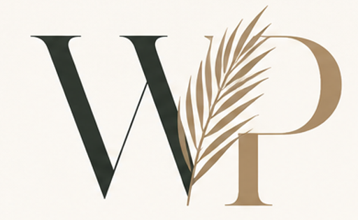

Responsive
Designed to feel considered on phones, tablets and larger screens.
Small business · A bigger online presence
Distinctive, thoughtfully designed websites for small businesses, independent professionals and organizations that want something better than ordinary.

Design · Development · DigitalMore than a website
NOT LIKE A TEMPLATE WITH YOUR LOGO ADDED TO IT.
We take the time to understand what you do, who you serve and what makes you different, then create a digital presence that brings it all together.
Your website is often the first meaningful interaction someone has with your business. It should communicate who you are, build confidence in what you offer and make the next step easy.
Personal. Purposeful. Built for you.
Designed + built with purpose
Beautiful on the surface. Thoughtful underneath.
Our services
Tailored solutions for real businesses
Bespoke, responsive websites built around your goals, audience and brand.
A fresh look and a stronger structure for what's next.
Built to be found, with search in mind from day one.
A cohesive look and feel that brings your business to life.
Forms, events, integrations and useful features shaped around what you need.
Support and updates as your business evolves.
Featured work
Different brands. Different purposes. No cookie cutters.

Travel
A sophisticated travel website designed to showcase cruise, tailor-made and luxury vacation expertise while keeping a large amount of information easy to explore.
View project →
Community
A member-run community platform built from the ground up to connect residents with events, activities and one another.
View project →A different kind of studio
When you work with West & Palm, you're talking directly with the person designing and building your site. No account managers. No templates. Just thoughtful conversations, clear communication and a website built specifically for you.
Our approach →Our process
We learn about your business, goals and audience.
We shape the strategy and structure.
We create a bespoke direction for your brand.
We bring it to life with clean, reliable technology.
We test, tweak and make sure everything works beautifully.
Your new website goes live, with support available.
Kind words
Design preview · sample testimonials only. These will be replaced with verified client feedback before launch.
“The whole process felt clear and personal. We ended up with a site that finally feels like us.”
“Technical decisions were explained in plain English, and every detail felt considered rather than copied from a template.”
“Fast, collaborative and surprisingly painless. The finished site gave us a much more polished online presence.”
“The whole process felt clear and personal. We ended up with a site that finally feels like us.”
“Technical decisions were explained in plain English, and every detail felt considered rather than copied from a template.”
Have something in mind?
Let's create something good.
Starting from scratch, outgrowing an existing website, or simply know your online presence could be better?
Start a project →